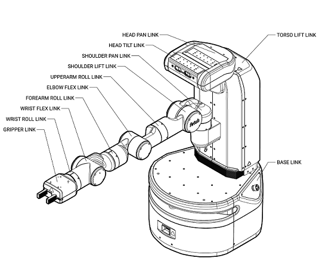

The robot URDF (unified robot description format) model specifies the attributes (kinematic tree, names, ranges, etc.) of the joints, links, and frames of the robot. A link element in the URDF describes a rigid body with inertia, visual features, and coordinate frames. A joint element in the URDF defines the kinematics, dynamics, safety limits, and type (revolute, continuous fixed, prismatic, floating, or planar).
The field of robotics is advancing at a rapid pace. Creating machines that can substitute for humans and to replicate the human actions will eventually reduce the need for human resources in future for accomplishing the tedious tasks. Robots can be used in many situations and for lots of purposes and there are enormous areas of application. Warehouse management is one such area where we can use robots for pick and place tasks which otherwise can be a miserable experience for the humans who work at it. My experiments with the fetch robot, a mobile manipulator with seven degrees of freedom. Tasks like navigating the robot from one place to another (Autonomous Navigation), programming it to recognise the objects and people around it (Perception) and programming it to pick and place the objects (Manipulation) have been implemented.